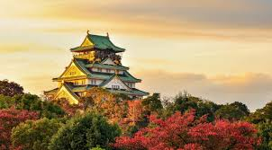
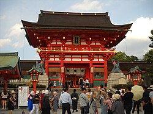
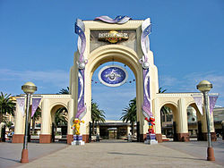

Osaka
Osaka Jepang: 大阪市 adalah sebuah kota di wilayah Kansai, Jepang. Selain sebagai ibu kota Prefektur Osaka, kota ini ditetapkan sebagai salah satu Kota Terpilih berdasarkan Undang-Undang Otonomi Lokal.
Osaka adalah kota berpenduduk terbesar nomor tiga di Jepang setelah Tokyo dan Yokohama. Kota ini terletak di pulau Honshu, di mulut Sungai Yodo di Teluk Osaka. Osaka adalah kota terbesar di kawasan Keihanshin sebagai pusat industri dan pelabuhan untuk daerah metropolitan Osaka-Kobe-Kyoto.
Di sebelah timur, Osaka bertetangga dengan Kyoto dan Nara, dan di sebelah barat dengan kota Kobe. Keihanshin adalah wilayah metropolitan berpenduduk terbesar nomor dua di Jepang, dan salah satu wilayah metropolitan terbesar di dunia dengan jumlah penduduk sekitar 18 juta orang,[1] sekaligus wilayah metropolitan terbesar nomor dua di Jepang berdasarkan PDB dan wilayah metropolitan terbesar nomor tujuh di dunia.
Osaka merupakan sebuah metropolis air yang dikenal dengan sungai-sungainya dan jumlah jembatan terbanyak di Jepang. Ada dua pusat kota di Osaka, yakni Umeda di sebelah utara, dan Namba di sebelah selatan. Kedua pusat kota ini dihubungkan oleh jalan utama yang bernama Midosuji. Kantor-kantor perdagangan, bank, dan konglomerat Jepang umumnya terpusat di sekitar Jalan Midosuji. Jalan Midosuji dikenal dengan pemandangan daun-daun pohon ginkgo yang menguning di musim gugur.

Fushimi Inari-taissha
Fushimi Inari Taisha (伏見稲荷大社) adalah kuil Shinto yang berada di Fushimi-ku, Kyoto, Jepang. Kuil ini merupakan kuil pusat bagi sekitar 40.000 kuil Inari yang memuliakan Inari. Kuil utama (honden) terletak di kaki Gunung Inari, dan tanah milik kuil mencakup gunung yang tingginya 233 meter.
Di kuil ini dimuliakan Ukanomitama bersama pendampingnya, Satahiko no Ōkami, Ōmiyanome no ōkami, Tanaka no ōkami, dan Shi no ōkami (四 大神).[1] Inari dipercaya sebagai dewa pertanian, sehingga kuil ini dipercaya membawa berkah bagi panen palawija, kesukesan dalam perdagangan bisnis, dan keselamatan di bidang transportasi.
Kuil Fushimi Inari masuk dalam peringkat kuil menurut Jinmyōchō (daftar nama kuil) yang diterbitkan bersama Engishiki. Selain itu, kuil ini berada dalam kelompok 7 kuil papan atas dari daftar 22 kuil utama (Nijūnisha). Dalam sistem lama peringkat kuil Shinto, kuil ini merupakan salah satu dari kampeisha (kuil resmi yang didanai pemerintah Jepang).
Kuil utama yang ada sekarang dibangun tahun 1499 setelah bangunan yang lama habis terbakar sewaktu terjadi Perang Ōnin. Aula utama kuil ini ditetapkan pemerintah Jepang sebagai warisan budaya yang penting. Sejak abad ke-17, penganut kuil Fushimi Inari memiliki tradisi membangun torii. Sekitar 10.000 torii yang berderet-deret di Gunung Inari merupakan hasil sumbangan umat. Di antaranya, Senbon torii (deretan seribu torii) telah menjadi salah satu objek pariwisata.

Universal Studios Jepang
Universal Studios Japan (ユニバーサル・スタジオ・ジャパン), adalah sebuah taman bermain di Osaka, Jepang yang dibuka pada tahun 2001. Taman bermain ini merupakan taman bermain Universal Studios yang pertamakali yang dibuka di luar wilayah negara Amerika Serikat. Taman hiburan ini terdiri dari 9 area, dengan 18 atraksi dan 20 restoran tematik. Selain tersedia tiket terusan ekonomis, ada pula tersedia tiket terusan VIP dengan harga yang lebih mahal, dengan fasilitas bebas antrian di setiap atraksi.
